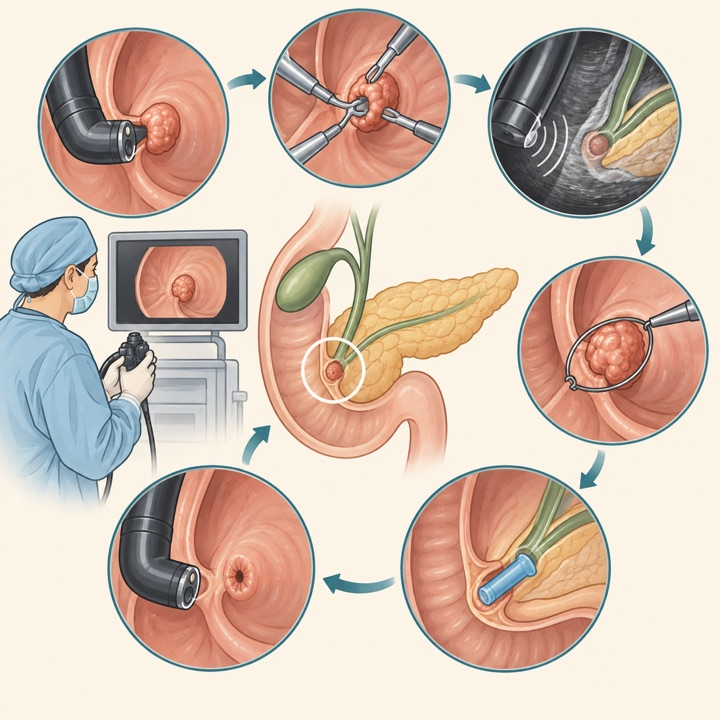
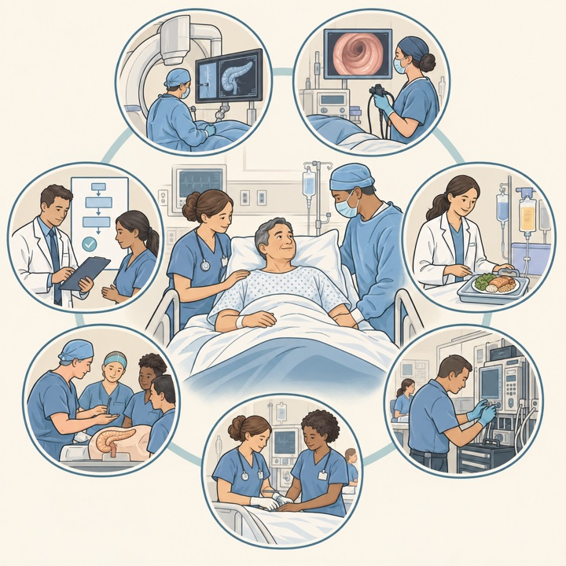
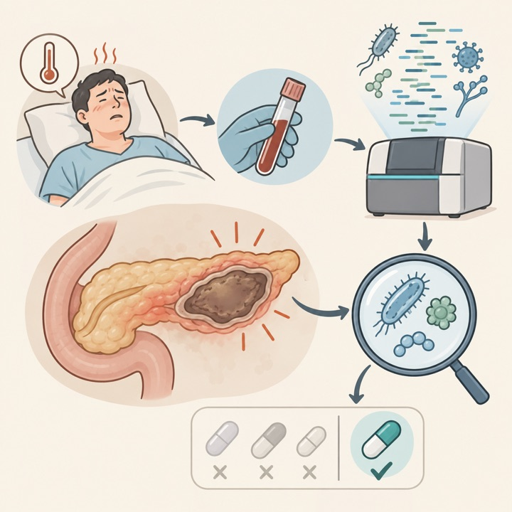
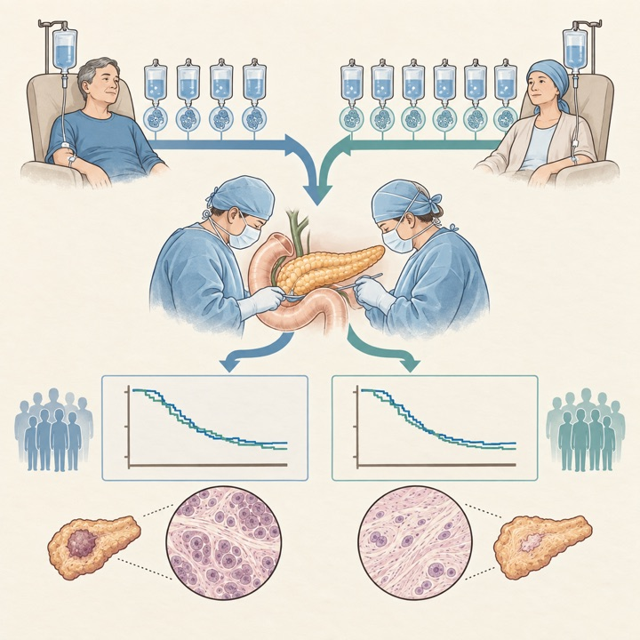
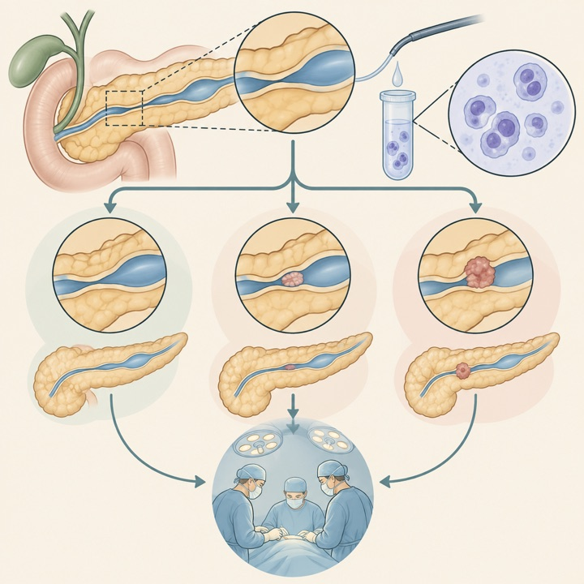
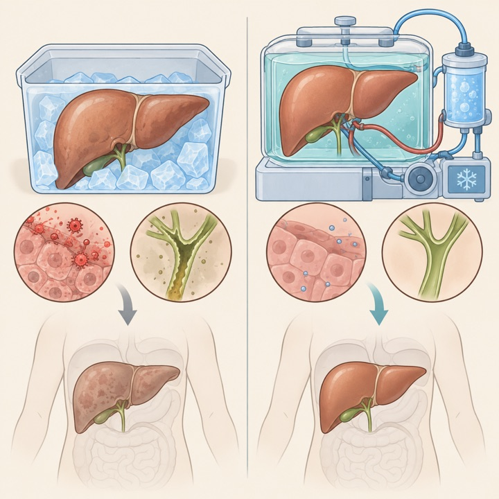

術前化学療法6か月は4か月よりEFSを延長せず
EClinicalMedicine / Q1Randomized phase III
PACT-21/CASSANDRA第2無作為化ではEFSが同等。長期群はCA19-9反応、pCR、N0切除を改善しましたが、OSは未成熟です。
Tokai University Pancreatobiliary Group
This Week's Pancreatobiliary Research Highlights
臨床的重要性、研究デザイン、診療への応用可能性を基準に4報を選定しました。IFとJCR quartileは原則2025年値（2026年公表、判明した最良カテゴリ）を使用し、quartileを確実に確認できない場合はQ4としました。
PACT-21/CASSANDRA第2無作為化ではEFSが同等。長期群はCA19-9反応、pCR、N0切除を改善しましたが、OSは未成熟です。
側視鏡、十分な生検、EUSによる進展評価、一括乳頭切除、膵炎予防、5年以上の監視を一連の実務助言として提示しました。
60か国214施設2,928例で、画像下介入、栄養支援、教育、看護配置など6資源の累積が低い90日死亡と関連しました。
静的冷保存との比較でEAD、PNF、重症合併症、非吻合部胆道狭窄、再移植が減少しました。
日本語: AGAは乳頭部腺腫について15のBest Practice Adviceを提示しました。評価は側視型十二指腸鏡を基本とし、悪性を20〜40%に含み得るため少なくとも6個の生検を推奨。1 cm未満かつ懸念所見のない病変を除きEUSで壁深達度・管内進展を評価し、管内進展が1 cmを超える場合は外科切除を検討します。適応例では一括スネア切除、予防的膵管ステント・直腸NSAIDs・十分な乳酸リンゲル液を用い、3、6、12か月後、その後年1回を少なくとも5年間監視します。系統的レビューではなく正式な推奨強度評価がない点に注意が必要です。
English: Fifteen best-practice statements align side-viewing inspection, adequate biopsy, selective EUS staging, en bloc papillectomy, pancreatitis prophylaxis, and structured surveillance. The advice is expert-based and not formally graded.

日本語: 6施設の専門医注釈EUS画像でAIを開発し、初学者5名・専門医3名がAIあり/なしで画像セットを読む無作為2期クロスオーバー試験を実施しました。初学者の膵充実性病変検出感度は76.8%から88.7%、正確度は78.7%から86.4%へ向上し、特異度は非劣性基準を満たしました。膵実質認識感度の優越性は未達でした。静止画像ベースの読影研究であり、リアルタイム診療の患者転帰改善は今後の検証課題です。
English: AI assistance improved novice sensitivity for solid pancreatic lesions from 76.8% to 88.7% and accuracy from 78.7% to 86.4%. This reader study supports an adjunctive role but does not establish real-time clinical benefit.

日本語: 単一三次施設で163例に前方視鏡を先行し、別の盲検術者が側視鏡でERCPを行いました。前方視鏡のみで見つかった所見は69例（42.3%）、管理変更につながる所見は37例（22.7%）でした。併存悪性腫瘍は側視鏡での重要所見見逃しと関連し、再建腸管も単変量解析で関連しました。タンデム順序が固定された単施設試験であり、全ERCPに追加する際の費用・時間・患者転帰は未確定です。
English: Forward viewing identified management-altering findings missed by the side-viewing examination in 22.7% of 163 patients. Outcome benefit and generalizability remain uncertain.

日本語: 発症2週以内に発熱した急性壊死性膵炎125例を5施設で前向き登録。実臨床では91.2%に抗菌薬が投与されましたが、最終的な感染性膵壊死は23.2%、従来培養に基づく適切投与は14.5%でした。mNGS結果を用いる事前規定ルールの後ろ向きシミュレーションでは適切投与が71.8%に上がると推定されました。ただし結果は診療チームに非開示で、実際の抗菌薬削減・転帰改善を検証した介入試験ではありません。
English: In 125 febrile patients with acute necrotizing pancreatitis, antibiotics were used in 91.2% although confirmed infected necrosis occurred in 23.2%. Simulated mNGS guidance increased estimated appropriateness, but clinical utility remains hypothetical.

日本語: イタリア17施設のPACT-21/CASSANDRA第2無作為化で、PAXGまたはmFOLFIRINOXを4か月受け進行・制限毒性のない165例を、同レジメン2か月を術前に追加する長期群86例と術後に回す短期群79例へ割り付けました。主要評価項目EFSは差なし（HR 0.98、95%CI 0.68〜1.41）。長期群はCA19-9反応97%対84%、pCR 5%対0%、N0切除45%対27%でしたが、OSは未成熟です。術前期間延長だけでEFSは改善せず、病理効果の改善が長期生存へ結び付くかを待つ必要があります。
English: Extending preoperative chemotherapy from four to six months did not improve EFS (HR 0.98). Longer therapy improved CA19-9 response, pCR, and N0 resection, while OS remains immature.

日本語: 2008〜2024年にHG-PanIN疑いで膵切除を受けた国内4施設94例を解析。最終診断は良性27.7%、上皮内癌46.8%（HG-PanIN 34例、高異型度IPMN 10例）、浸潤癌25.5%でした。典型画像例でも良性22.2%、浸潤癌25.4%を含みました。膵液細胞診陽性のPPVは96.7%でしたが、陰性例の61.5%は悪性（上皮内癌＋浸潤癌）でした。画像・細胞診とも単独での除外力に限界があり、手術適応や縮小切除は慎重な多職種判断を要します。
English: Among 94 resections for suspected HG-PanIN, 27.7% were benign and 25.5% invasive cancer. Pancreatic juice cytology had high PPV but poor reassurance when negative, underscoring diagnostic uncertainty.

日本語: PancreasGroup.orgの2021年国際前向きコホートと施設調査を連結し、60か国214施設2,928例を解析しました。画像下治療・内視鏡へのアクセス、体系的栄養支援、エビデンス実装、職員教育、機器保守、良好な看護師患者比の6要因でHospital Resource Indexを構成。1点増加ごとに90日死亡オッズが12%低く（OR 0.88）、6資源すべてを持つ施設はゼロの施設より死亡率が54%低値でした。年間55件以上の手術量も独立して関連しました。観察研究で因果は証明せず、資源整備と集約化を補完的に考える結果です。
English: Six modifiable hospital resources showed cumulative protection against 90-day mortality independent of case volume. The observational design supports quality-improvement targets but cannot prove causality.

日本語: 成人肝移植の8 RCT、984例（HOPE 461、静的冷保存523）を統合。HOPEは早期移植肝機能不全17.8%対33.5%（RR 0.54）、primary non-function 0.4%対3.6%（RR 0.26）、Clavien–Dindo III以上41.2%対50.7%（RR 0.80）、胆道合併症18.9%対27.7%（RR 0.72）、非吻合部胆道狭窄3.3%対7.6%（RR 0.43）を減らしました。1年移植肝生存は同等でしたが、再移植も減少（RR 0.35）。臓器種別・灌流プロトコル差を踏まえた実装が必要です。
English: Across eight RCTs, HOPE reduced early allograft dysfunction, primary non-function, major complications, biliary complications, nonanastomotic strictures, and retransplantation; one-year graft survival was similar.

ClinicalTrials.gov公式APIを2026年9月15日に検索し、9月9日〜15日に新規公開された直接関連研究15件と、診療・開発上重要な更新13件を選択しました。一般固形癌のみ、嚢胞性線維症、糖尿病、Pancreatic Stone Protein、無関係なEUS略語などは除外しています。JRCTは検索していません。
| 新規｜膵管鏡AI | NCT07809841 リアルタイムAIによる膵管鏡下腫瘍検出 2026-09-09公開 / 前向き診断研究 / 60例 / Not yet recruiting。 |
|---|---|
| 新規｜膵嚢胞EUS | NCT07814326 膵嚢胞に対するLoop Brush EUS-FNAの実行可能性 2026-09-10公開 / pilot / 8例 / Not yet recruiting。 |
| 新規｜胆管結石 | NCT07814976 経胆嚢管的乳頭バルーン拡張時のhyoscine butylbromide 2026-09-11公開 / 50例 / Recruiting。 |
| 新規｜肝門部閉塞 | NCT07811791 切除不能悪性肝門部胆道閉塞の乳頭上対乳頭内プラスチックステント 2026-09-10公開 / 70例 / Not yet recruiting。 |
| 新規｜胆膵悪性閉塞 | NCT07817602 黄疸を伴う胆膵悪性腫瘍の内視鏡的胆道ドレナージ実臨床評価 2026-09-14公開 / 300例 / Not yet recruiting。 |
| 新規｜重症急性膵炎 | NCT07816900 重症急性膵炎・腹腔内圧亢進に対する大承気湯 2026-09-14公開 / 60例 / Completed。 |
| 新規｜慢性膵炎 | NCT07810309 膵管減圧が糖代謝に与える影響 2026-09-09公開 / 第I相 / 30例 / Not yet recruiting。 |
| 新規｜切除可能PDAC | NCT07808567 切除可能膵癌の新規術前治療プラットフォーム 2026-09-09公開 / 第II相 / 42例 / Not yet recruiting。 |
| 新規｜進行PDAC | NCT07814859 retlirafusp alfa＋famitinib＋GnP一次治療 2026-09-11公開 / 第II相 / 88例 / Not yet recruiting。 |
| 新規｜進行PDAC | NCT07814066 分子別治療を評価する第II相umbrella試験 2026-09-10公開 / 第II相 / 30例 / Not yet recruiting。 |
| 新規｜NTSR1 | NCT07812805 PDAC・BTCを含むNTSR1陽性腫瘍のSKL35501/SKL35502 theranostics 2026-09-10公開 / 第I相 / 100例 / Recruiting。 |
| 新規｜膵癌検診 | NCT07808671 膵癌スクリーニング意思決定支援ツール 2026-09-09公開 / 40例 / Not yet recruiting。 |
| 新規｜局所治療 | NCT07817147 / CREO 切除不能膵癌・肝癌に対するマイクロ波焼灼の実行可能性 2026-09-14公開 / 75例 / Recruiting。 |
| 新規｜胆管癌 | NCT07814586 胆管癌治療の予後評価・体系的再評価レジストリ 2026-09-11公開 / 900例 / Not yet recruiting。 |
| 新規｜肝移植 | NCT07811453 局所治療不能・切除不能大腸癌肝転移に対する肝移植 2026-09-10公開 / 260例 / Not yet recruiting。 |
| 更新｜HER2陽性BTC | NCT06282575 zanidatamab＋標準療法対標準療法 2026-09-14更新 / 第III相 / 286例 / Recruiting。 |
| 更新｜PSC | NCT07646223 PSC合併非典型大腸炎に対するvancomycin 2026-09-10更新 / 第II相 / 140例 / Not yet recruiting。 |
| 更新｜IgG4-RD | NCT06590051 AMG 335拡大アクセス 2026-09-14更新 / Approved for marketing。 |
| 更新｜膵切除 | NCT07148830 PDACに対するmesopancreatic excision 2026-09-11更新 / 100例 / Recruiting。 |
| 更新｜術後PDAC | NCT05968326 個別化mRNAワクチンautogene cevumeran＋atezolizumab＋mFOLFIRINOX 2026-09-09更新 / 第II相 / 260例 / Active, not recruiting。 |
| 更新｜MBO | NCT06750146 / Hot AXIOS 悪性胆道狭窄に対する通電拡張型LAMS 2026-09-09更新 / 162例 / Suspended。 |
| 更新｜肝移植 | NCT07585890 欧州の機械灌流肝移植ベンチマーク 2026-09-10更新 / 10,000例 / Recruiting。 |
| 更新｜転移性PDAC | NCT07491445 一次治療daraxonrasib±GnP 2026-09-14更新 / 第III相 / 900例 / Recruiting。 |
| 更新｜転移性PDAC | NCT07562152 atebimetinib＋GnP一次治療 2026-09-11更新 / 第III相 / 510例 / Recruiting。 |
| 更新｜進行PDAC | NCT06897644 GnPスイッチ維持対mFOLFIRINOX継続 2026-09-09更新 / 第III相 / 340例 / Recruiting。 |
| 更新｜慢性膵炎 | NCT04996628 / P-QST 定量的感覚検査による疼痛治療反応予測 2026-09-11更新 / 150例 / Recruiting。 |
| 更新｜切除可能BTC | NCT06037980 / GRITTY 高再発リスク胆道癌の術前GAP対即時切除 2026-09-09更新 / 第II/III相 / 300例 / Recruiting。 |
| 更新｜若年膵炎 | NCT06651580 / INSPPIRE 2 小児再発性急性・慢性膵炎の高リスク膵癌遺伝子・生体試料研究 2026-09-11更新 / 1,600例 / Recruiting。 |
PubMedの2026年9月9日〜9月15日EDATに加え、Nature Reviews Gastroenterology & Hepatology、The Lancet Gastroenterology & Hepatology、Gastroenterology、Gut、Clinical Gastroenterology and Hepatology、Annals of Surgery、Journal of Hepato-Biliary-Pancreatic Sciences、Gastrointestinal Endoscopy、Endoscopy、Surgical Endoscopy、Endoscopy International Open、VideoGIE、Clinical Endoscopy、Digestive Endoscopy、DEN Open、iGIEの公式掲載ページ・最新記事一覧またはDOI解決先を確認しました。PSC・IgG4関連疾患では同期間に本週報の主ハイライトに優先する新規臨床成果を確認できず、ClinicalTrials.gov更新のみ掲載しました。速報・ahead of printの情報は更新されることがあります。
2026年8月31日〜9月6日版
2026年8月24日〜8月30日版
2026年8月17日〜8月23日版
2026年8月10日〜8月16日版
2026年8月3日〜8月9日版
2026年7月27日〜8月2日版
2026年7月20日〜7月26日版
2026年7月13日〜7月19日版
2026年7月6日〜7月12日版
医療従事者向け情報： 本ページは医師・医学生・研究者向けの文献整理であり、患者向け広告、診療ガイドライン、個別の診断・治療助言ではありません。掲載内容は公開時点の情報に基づき、原著論文・最新ガイドライン・各施設の方針をご確認ください。